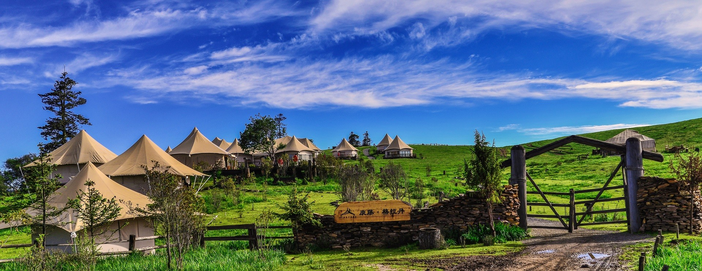

400-6622-237
400-6622-237
24小时在线
中文/
En
首页
关于我们
康腾营地
联系我们
营地预定
康藤·格拉丹帐篷营地

康藤·格拉丹源自一个把白云种在草原上、伸手摘星的纯真梦想。2013年5月美梦成真，在中国云南省丽江玉龙县黎明乡老君山国家地质公园3600米海拔的格拉丹草原上，出现了中国首家精品帐篷营地，同时它也是世界上海拔最高的帐篷营地——康藤·格拉丹帐篷营地。营地占地50亩，以高山之巅“一花一世界，一叶一如来”的设计理念，用仅有的7间客房，开启了中国野奢帐篷营地时代。
营地所属的中国丽江老君山国家公园，横卧在澜沧江与金沙江之间，是国家级“三江并流”风景区的重要主体部分，被誉为“滇山之太祖”。 丹霞地貌、冰蚀湖群、原始森林、高山草甸一起讲述了一个关于生命与轮回的故事。无声地告诉人们: 在自然世界中，浑厚的宇宙之力才是最值得敬畏的主宰。
远离喧嚣，寻一处安静之所，让千变万化的蓝天白云、阳光草地，璀璨浩淼的满天星斗，还有绽放于山间鲜花与清澈的溪流，洗净世间尘土，感受自性的至纯至真。
关于康藤·格拉丹
营地相册
营地房型
如何到达
独特体验
特别制定